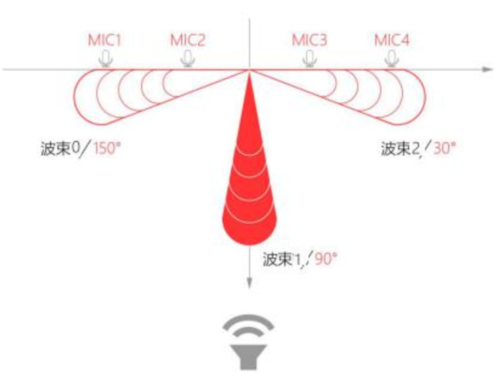
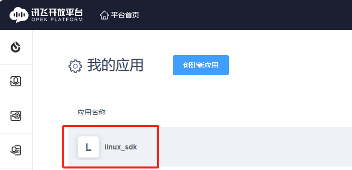
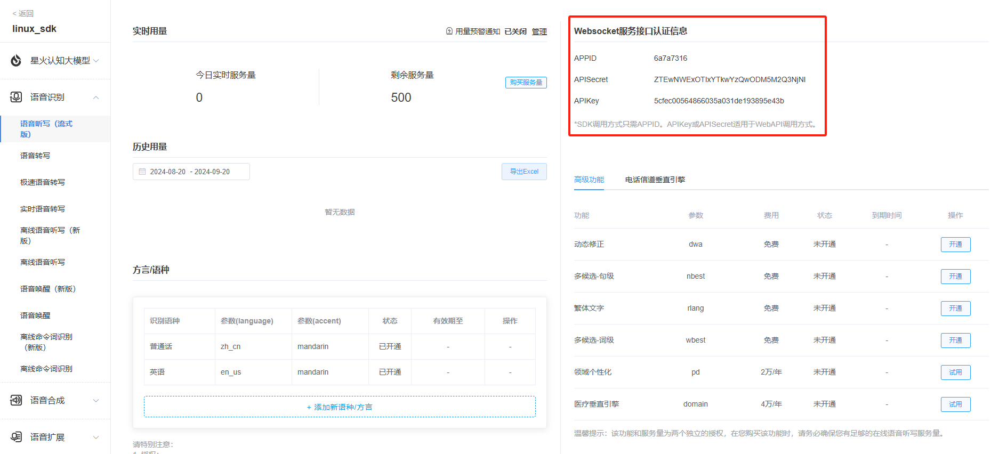
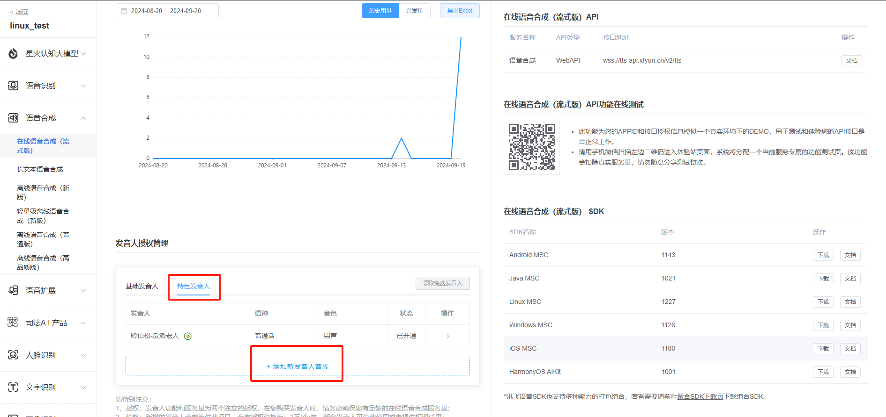
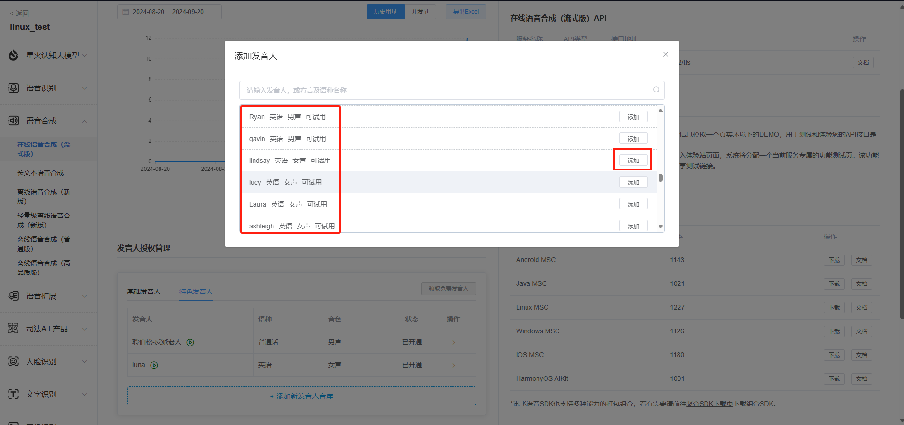
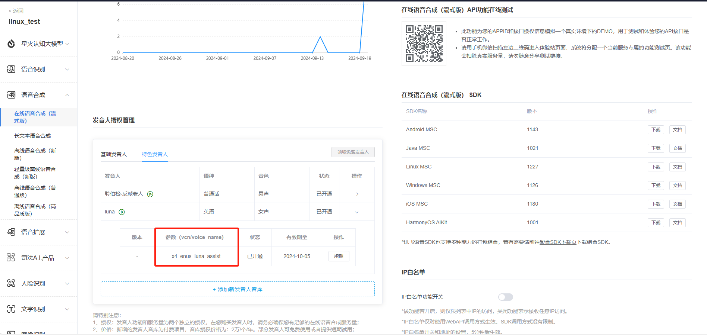
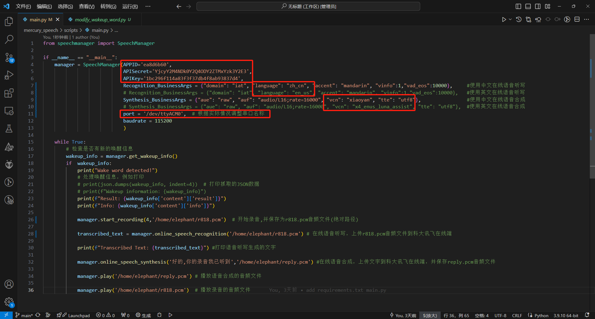
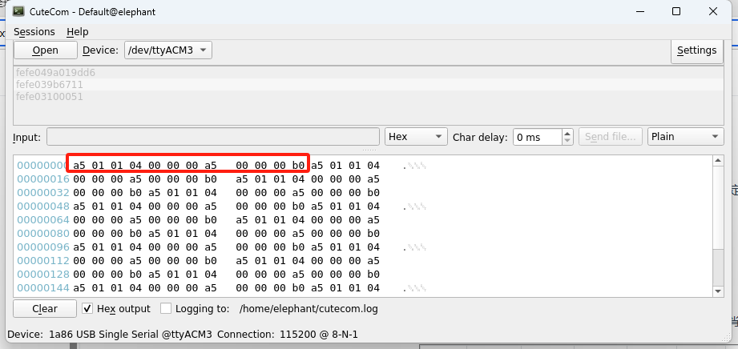
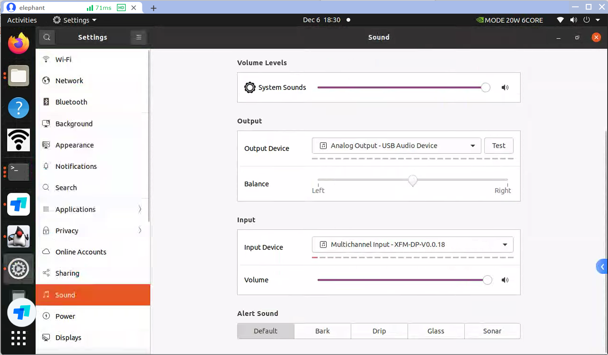
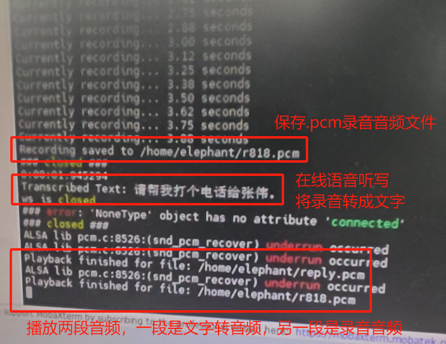

线性麦克风阵列

M240 线性 4 麦可以拾取 5m 以内距离的声源,声源定位角度为 0-180°，不分前后，唤醒角度分辨率为 5°。
线性麦克风阵列拾音是通过固定波束拾取指定角度范围内的声源，并抑制其它角度声源的影响。固定波束指的是模块通过阵列麦克风的不同拾音差异，通过算法滤波输出的某个特定方向音频，波束指向方向仅为拾音方向，并不会影响和改变唤醒时的角度等任何信息。波束示意图如下所示

github代码
https://github.com/elephantrobotics/mercury_speech
代码流程
离线唤醒——>录音——>在线语音听写——>在线语音合成——>播放音频
代码运行流程：运行python脚本后，说出唤醒词（小微小微），听到唤醒词后开始录音（默认4s），生成.pcm的音频文件，然后将录音文件上传到科大讯飞在线端，并获取语音听写输出的文字。同时也将对话的文字上传到科大讯飞在线端，合成对话音频并播放出来。
在线语音听写和在线语音合成功能服务需要自行申请。
科大讯飞应用申请
https://www.xfyun.cn/
登录讯飞开放平台，注册和登录用户，并且实名认证

1.主页面找到控制台，点击进去
2.在左上角，找到创建新应用

3.根据需求填写应用名称，应用分类和功能描述，并提交

4.返回到我的应用，点击刚刚创建的应用

5.找到在线语音听写功能，右上角就是该应用的授权信息。
需要注意的是：应用创建时为体验版（免费），应用部分功能的服务量有效期可能为30天或者90天不等，如果服务量需求较多可以额外购买套餐。
https://www.xfyun.cn/services/voicedictation

6.在线语音合成申请英文发音人授权，同样的申请的语音合成也为体验版，如果服务量需求较多可以额外购买套餐。
https://www.xfyun.cn/services/online_tts



7.需要获取APPID，APISecret，APIKey，中英文参数，语音合成音频参数
SpeechManager 类用于管理语音相关的功能，包括语音唤醒、在线语音识别、在线语音合成、录音和播放 PCM 文件。
参数:
- APPID: 应用的 APPID,用于 API 调用。
- APISecret: API 秘钥，用于身份验证。
- APIKey: API 密钥，用于 API 授权。
- Recognition_BusinessArgs: 在线语音识别的业务参数，用于指定识别的行为。
- Synthesis_BusinessArgs: 在线语音合成的业务参数，用于指定合成的行为。
- port: 串口端口号 (默认值为 '/dev/ttyACM0')，用于离线唤醒功能。
- baudrate: 串口的波特率 (默认值为 115200)，用于离线唤醒的串口通信。

环境搭建
1.拉取代码
git clone https://github.com/elephantrobotics/mercury_speech.git
2.终端输入下面指令，安装依赖的文件
sudo apt-get install portaudio19-dev python3-dev libportaudio2
cd ~/mercury_speech/
pip install -r requirement.txt
代码示例
1.检测一下哪个是语音模块串口
终端输入cutecom，打开串口助手，查看ttyACM*的串口设备
如果出现/dev/ttyACM* permission denied，权限不够的情况下，可以输入
sudo chmod 777 /dev/ttyACM*
如果不想每次开机都操作一遍，可以输入下面指令，username修改为自己的用户名
sudo usermod -aG dialout username
语音模块会500ms固定发出“a5 01 01 04 00 00 00 a5 00 00 00 b0”的握手请求。那么ttyACM3就是语音模块。

2.修改main.py文件终端port串口并保存
3.点击桌面右上角，找到系统设置，要选中麦克风和扬声器设备。
输出设备是：Analog Output - USB Audio Device
输入设备是：Multichannel Input - XFM-DP-V0.0.18

4.终端输入python main.py运行
from speechmanager import SpeechManager
if __name__ == "__main__":
manager = SpeechManager(APPID='ea8d6b60',
APISecret='YjcyY2M4NDk0Y2Q4ODY2ZTMxYzk3Y2E3',
APIKey='1bc296f114a83f3f37db4f8ab93837d4',
Recognition_BusinessArgs = {"domain": "iat", "language": "zh_cn", "accent": "mandarin", "vinfo":1,"vad_eos":10000}, #使用中文在线语音听写
# Recognition_BusinessArgs = {"domain": "iat", "language": "en_us", "accent": "mandarin", "vinfo":1,"vad_eos":10000}, #使用英文在线语音听写
Synthesis_BusinessArgs = {"aue": "raw", "auf": "audio/L16;rate=16000", "vcn": "xiaoyan", "tte": "utf8"}, #使用中文在线语音合成
# Synthesis_BusinessArgs = {"aue": "raw", "auf": "audio/L16;rate=16000", "vcn": "x4_enus_luna_assist", "tte": "utf8"}, #使用英文在线语音合成
port = '/dev/ttyACM3', # 根据实际情况调整串口名称
baudrate = 115200
)
while True:
# 检查是否有新的唤醒信息
wakeup_info = manager.get_wakeup_info()
if wakeup_info:
print("Wake word detected!")
# 处理唤醒信息，例如打印
# print(json.dumps(wakeup_info, indent=4)) # 打印抓取的JSON数据
# print(f"Wakeup information: {wakeup_info}")
print(f"Result: {wakeup_info['content']['result']}")
print(f"Info: {wakeup_info['content']['info']}")
manager.start_recording(4,'/home/elephant/r818.pcm') # 开始录音4s,并保存为r818.pcm音频文件(绝对路径)
transcribed_text = manager.online_speech_recognition('/home/elephant/r818.pcm') # 在线语音听写，上传r818.pcm音频文件到科大讯飞在线端
print(f"Transcribed Text: {transcribed_text}") #打印语音听写生成的文字
manager.online_speech_synthesis('好的,你的录音我已听到','/home/elephant/reply.pcm') #在线语音合成，上传文字到科大讯飞在线端，并保存reply.pcm音频文件
manager.play('/home/elephant/reply.pcm') # 播放语音合成的音频文件
manager.play('/home/elephant/r818.pcm') # 播放录音的音频文件

运行效果


功能接口描述
online_speech_recognition(AudioFile)
- 在线语音识别
param AudioFile: 录音文件路径
return: 识别后的文本
online_speech_synthesis(Text,pcm_file)
- 在线语音合成
param Text: 待合成的文本
param pcm_file: 合成后保存的文件名
play(filename)
播放指定的 PCM 文件
param filename: PCM 文件路径
start_recording(TIME, pcm_file)
- 设置录音参数并验证输入的录音时长
param TIME: 录音时长，单位为秒，必须在 0 到 60 秒之间 (默认值为 4 秒)
param pcm_file: 保存录音的文件名 (默认文件名为 'r818.pcm')
get_wakeup_info()
- 获取唤醒的信息，如果有新数据，则返回唤醒信息，并重置事件状态。
return 返回唤醒信息